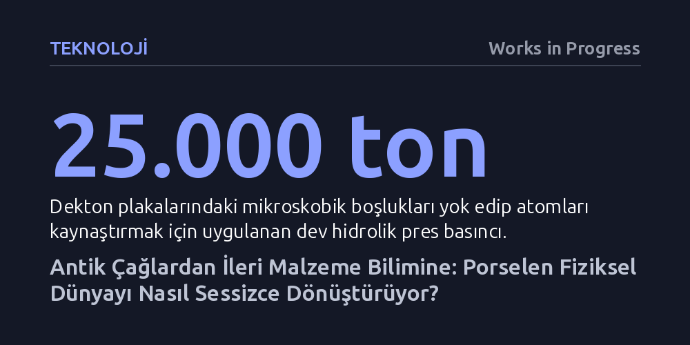

TEKNOLOJI · Works in Progress · 2026-10-15
İleri malzeme bilimi sayesinde porselen, kırılgan bir sofra eşyası olmaktan çıkıp kırılmaz mutfak yüzeylerinden vücutta eriyen kemik iskelelerine uzanan yüksek teknolojiye dönüştü. Atomik düzeyde güçlendirilen bu kadim madde, dijitalleşmenin gölgesinde fiziksel dünyayı sessizce yeniden inşa ediyor.
Porseleni sadece vitrinde sergilenen kırılgan bir antika sanan okura, atomik yapısı yeniden düzenlenen seramiklerin mutfak tezgahlarından ortopedik cerrahiye kadar gündelik hayatı kökten değiştirdiğini gösterir.

Günümüzde kamuoyunun ve medyanın ilgisi haklı olarak yapay zekânın baş döndürücü yükselişine ve dijital dönüşüme odaklanmış durumda. Ancak bu yoğun dijital büyülenme, etrafımızı çevreleyen yapılı çevrenin ve fiziksel dünyanın malzeme bilimi eliyle geçirdiği en az onun kadar köklü bir başka dönüşümü gölgede bırakıyor. Malzeme bilimi, yani bir maddenin mikroskobik yapısı ile fiziksel nitelikleri arasındaki ilişkiyi inceleyen disiplin, duvarlarımızdan ameliyathanelere kadar gündelik hayatımızı sessizce baştan yaratıyor.
Bu sessiz devrimin en şaşırtıcı aktörlerinden biri ise çoğu insanın aklına yalnızca narin çay fincanlarını getiren porselen. Yazarın da vurguladığı gibi, "Porselen hem insanlığın en eski yüksek teknolojilerinden biri hem de en yenilerinden biridir." Bugün endüstriyel fırınlardan çıkan yeni nesil porselenler; üzerine kaynar su dolu tencereler düşürüldüğünde dahi çatlamayan mutfak tezgahlarına, ıslandığında vantuz gibi ayağa yapışarak kaymayı önleyen yer karolarına ve vücutta kemik dokusu oluştuktan sonra kendiliğinden eriyen biyoprotezlere hayat veriyor.
Porselenin kökeni üç bin yıldan daha eskiye, kuzey Çinli çömlekçilerin kaolen adı verilen ince taneli ve tebeşir beyazı bir kil türünü keşfetmesine dayanıyor. Sıradan kil mikroskop altında incelendiğinde, iskambil kağıtları gibi üst üste dizilmiş ve hidroksil gruplarıyla gevşekçe tutturulmuş mikroskobik plakalardan oluşur. Pişirme sırasında bu bağlar kopar; plakalar birbirine kenetlenen iğnemsi kristallere dönüşürken açığa çıkan su buharlaşır ve geriye sert bir yapı kalır.
Ancak kaolinit minerali 1.200 santigrat derece gibi aşırı yüksek sıcaklıklara ulaştığında bambaşka bir kimyasal dönüşüm sergiler. Kilin içindeki silisyum ve oksijen ayrılarak akışkan bir sıvı cama dönüşür; bu camsı sıvı, iğnemsi kristal ağının içindeki tüm boşlukları doldurarak pürüzsüz, ışık geçiren ve gözeneksiz tek bir kütle meydana getirir. Çinliler bu sıcaklığa ulaşabilmek için sadece kili değil, fırın mühendisliğini de baştan icat ettiler: Sıcak havanın tavandan hemen kaçmasını engelleyen taban menfezli çekiş sistemleri ve bu cehennemi ısıya erimeden dayanan özel refrakter tuğlalar geliştirdiler.
On üçüncü yüzyılda Asya'dan gelen porselenle tanışan Avrupalı seçkinler için bu pürüzsüz ve dayanıklı malzeme adeta bir büyüydü. O dönemin en büyük zenginlik ve itibar simgesi haline gelen porselen, "beyaz altın" olarak adlandırılıyor ve ithalatına astronomik servetler ödeniyordu. Ancak Avrupa'da hiç kimse bu malzemenin kaolen kilinden yapıldığını bilmiyor, kalitesiz taklitler ise ne porselenin mekanik gücüne ne de kaşıkla vurulduğunda çıkardığı o berrak çınlamaya ulaşıyordu.
Çözüm, Saksonya'da devasa cam merceklerle güneş ışığını odaklayarak malzemeleri eriten doğa filozofu Tschirnhaus ile sahte bir simyacı olan Böttger'in zoraki ortaklığından çıktı. Değersiz metalleri altına dönüştürdüğünü iddia ettiği için Saksonya hükümdarı Güçlü Augustus tarafından bir kale tavan arasına kapatılan Böttger, canını kurtarmak için Tschirnhaus ile porselen geliştirmeye razı oldu. Yüksek ısıya dayanıklı fırın tuğlaları ve yerel beyaz kil yatakları keşfedilerek 1708'de ilk Avrupa porseleni üretildi; ardından kurulan Meissen fabrikası kıtanın porselen tekeli haline geldi.
Geleneksel seramiklerin en zayıf karnı her zaman kırılganlıkları olmuştur. Klasik seramikler, darbe enerjisini gövdeye yaymak yerine tek bir noktada toplayarak çatlağa dönüştüren mikroskobik boşluklar ve yapısal kusurlar barındırır. Modern malzeme bilimi, Dekton gibi yeni nesil hibrit seramik yüzeylerle bu sorunu neredeyse tamamen ortadan kaldırmayı başardı.
Yaklaşık 200 milyon dolarlık yatırım ve altı yıllık araştırma sonucunda geliştirilen bu üretim tekniğinde, öğütülmüş porselen, cam ve kuvarstan oluşan karışım 25.000 tonluk devasa bir hidrolik presten geçirildikten sonra 1.200 santigrat derecede pişiriliyor. Uygulanan bu aşırı basınç ve sıcaklık, parçacıkların temas noktalarındaki atomların birbiri içine yayılmasını (difüzyon) sağlıyor. Böylece mikro kusurlar bütünüyle siliniyor ve malzeme, darbeleri dağıtabilen monolitik, neredeyse tek parça katı bir kütleye dönüşüyor.
Porselenin yeniden doğuşu sadece mutfak tezgahlarıyla sınırlı değil; gündelik güvenlikten en ileri cerrahiye kadar uzanıyor. Örneğin banyolarda kayganlaşan karolar yüzünden her yıl on binlerce insan ağır şekilde yaralanıyor. Yeni nesil seramik üreticileri, yüzeyine özel kristal bileşenler fırınlanmış ıslaklıkla aktifleşen karolar geliştirdi. Kuru haldeyken sıradan olan bu yüzeyler ıslandığında, üzerine basan ayağın basıncıyla suyu yüzeydeki mikro gözeneklere iterek anında bir vantuz etkisi yaratıyor ve kaymayı engelliyor.
Tıp dünyasında ise porselen cerrahi bir devrime imza atıyor. Metal alaşımlı protezlerin kana salabileceği toksik iyon riskini bertaraf etmek amacıyla geliştirilen 3D baskılı gözenekli biyoseramikler, kalıcı bir protez olmak yerine geçici bir iskele görevi görüyor. Kan damarları ve kemik hücreleri bu seramik kafesin içine doğru büyüyerek doğal dokuyu yeniden inşa ederken, porselen yapı zamanla vücut içinde zararsızca çözünerek yerini tamamen hastanın kendi canlı kemiğine bırakıyor.